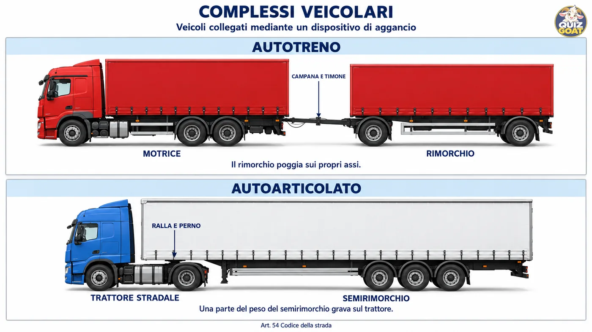

‹ Abilitazioni professionali
Patenti C e D
Le patenti per gli autocarri e per gli autobus, con i loro rimorchi.
Autocarri: C1, C1E, C e CE
- Età
- C1 e C1E: 18 anni
- C e CE: 21 anni, oppure 18 anni se prima della prova pratica hai concluso il corso della CQC merci
- Documenti
- Gli stessi della patente B, più la patente che hai già, in originale e fotocopia.
- Come funziona
- Teoria con quiz al computer, foglio rosa e prova pratica. Per la C1E e la CE la teoria della C1 o della C superata dal 2 marzo 2015 vale anche per il rimorchio.
- Validità
- 5 anni fino a 65 anni di età. Dopo i 65 anni, 2 anni, con la visita in commissione medica locale.
- Per lavoro
- Per guidare un autocarro come lavoro serve anche la CQC merci.

Autobus: D1, D1E, D e DE
- Età
- D1 e D1E: 21 anni
- D e DE: 24 anni, oppure 21 anni se prima della prova pratica hai concluso il corso della CQC persone
- Documenti
- Gli stessi della patente B, più la patente che hai già, in originale e fotocopia.
- Come funziona
- Teoria con quiz al computer, foglio rosa e prova pratica.
- Validità
- 5 anni; 3 anni dai 70 anni. Dai 60 anni le patenti D1 e D valgono solo per i veicoli della B, salvo l’attestato medico annuale che consente di continuare fino a 68 anni.
- Per lavoro
- Per guidare un autobus come lavoro serve anche la CQC persone.
Queste informazioni riassumono il Codice della strada e le pagine del Ministero delle infrastrutture e dei trasporti, controllati a novembre 2026. Importi e casi particolari cambiano nel tempo: per la tua pratica chiedi in sede.
Preventivo gratuito
Senza impegno. Scrivici o passa in sede: ti diciamo costi, tempi e che cosa portare.